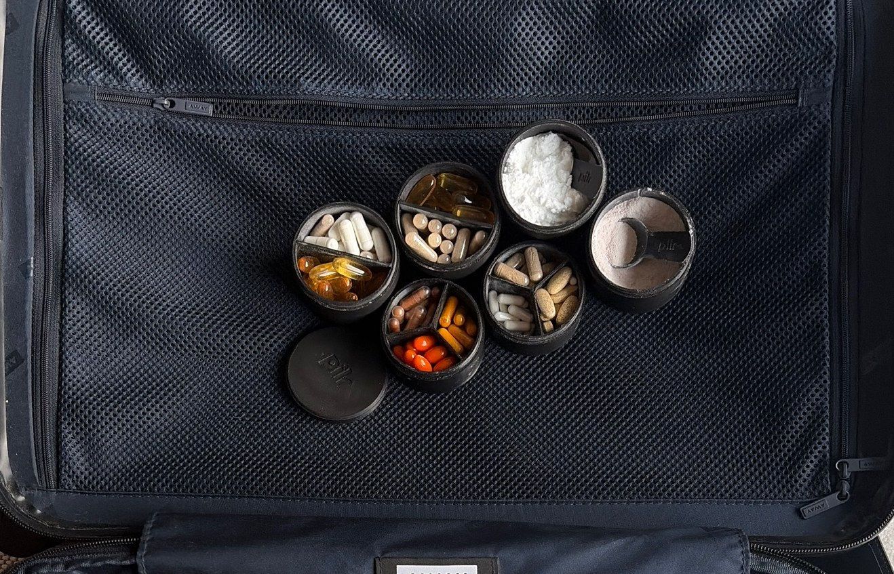
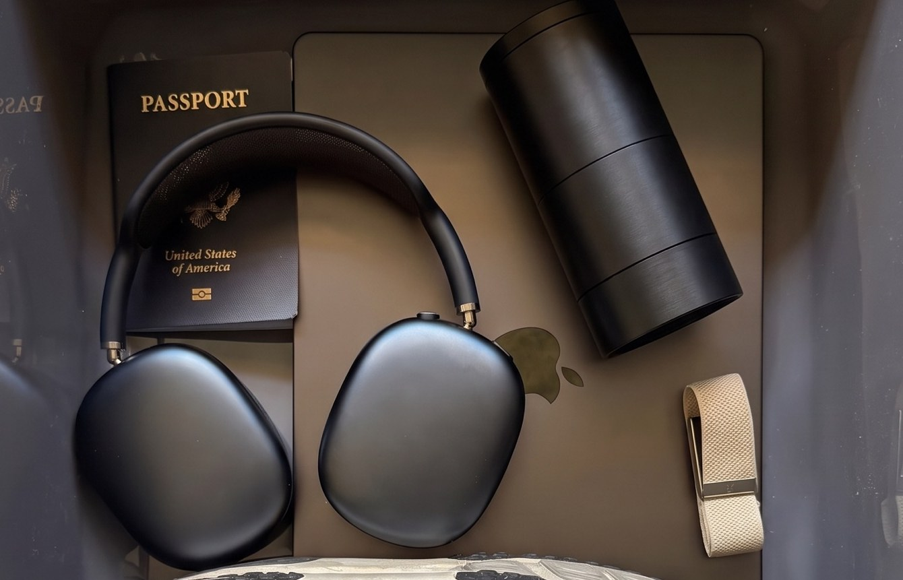
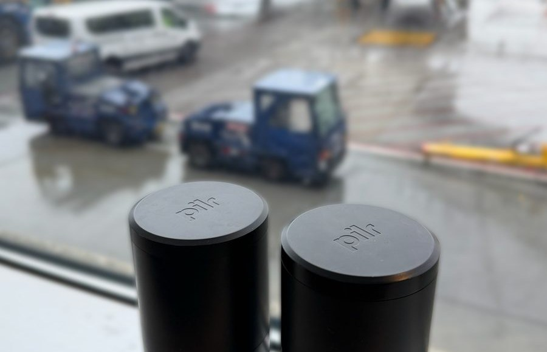
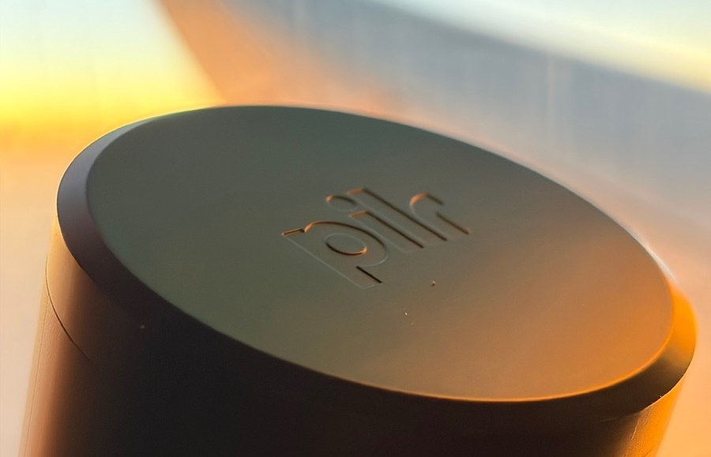

How pilr answers
Pack. Stack. Go.
Why pilr
Every supplement you take. One system that travels.

The premise
Routines run on cues: the same shelf, the same counter, the same time. Change the setting and the cue disappears. Unless it comes with you.4
What the research shows
Where routines break

Pack. Stack. Go.

Pills and powders. One sealed system.

Everything your routine needs, in one place.

Stay consistent, and there’s nothing to restart.
Materials
A durable copolyester built to take daily use. It resists impact, holds its shape, and won't hold onto odors or stains.
Impact-resistant
Built to survive drops without cracking.
Odor & stain resistant
Fish oil, greens, and powders don't linger.
BPA-free & food-safe
Made without BPA. Meets FDA food-contact requirements.
FAQ
The Powder Pod is sized to hold about a week's supply of most powders — greens, creatine, collagen, etc. For protein powder, you may need multiple pods. For exact volumes by powder type, see our size guide.
Yes — head to Build Your System to mix and match individual pod types and quantities for a fully custom configuration.
Build my system →
Rinse each pod with warm water and a drop of dish soap. Rinse well and let every piece air dry completely before refilling.
Yes, pilr pods are TSA-compliant. Powders may be subject to additional screening for quantities over 12oz. We recommend keeping your stack in an easily accessible part of your bag.
Standard shipping takes 3–5 business days. Expedited options are available at checkout.
Yes — all individual pods are available in the Single Pods section of the shop.
Single pods →